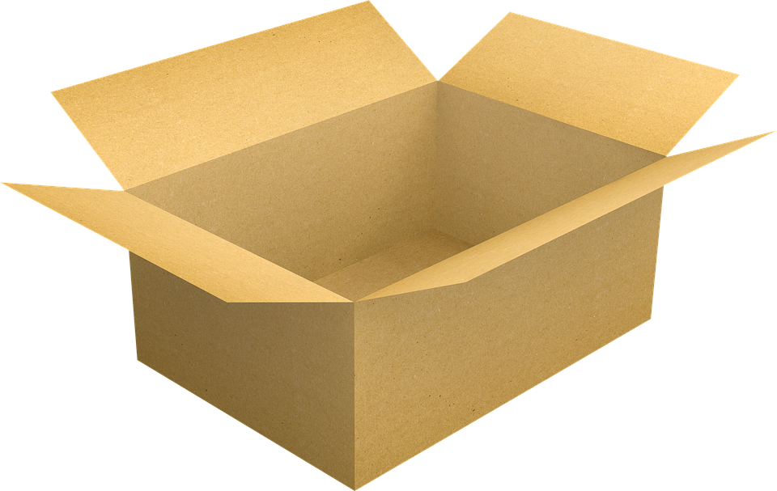
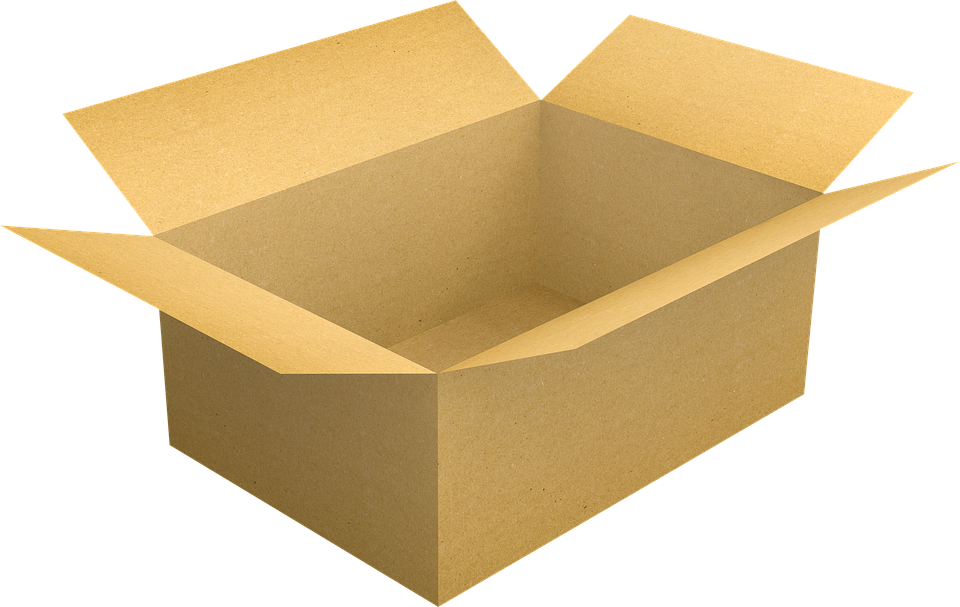

Reduce, Reuse, Recycle
Do you know what it means to "reduce, reuse, and recycle" materials?
Reducing is cutting back on the amount of trash we make.
Reusing is finding new ways to use materials again so that we throw out less.
Recycling is using trash to remake new goods so that they can be sold again.
From the items below, click on the items you reduce, reuse, and/or recyle?
 
Continue
Back
Home

Continue
Back
Home
<